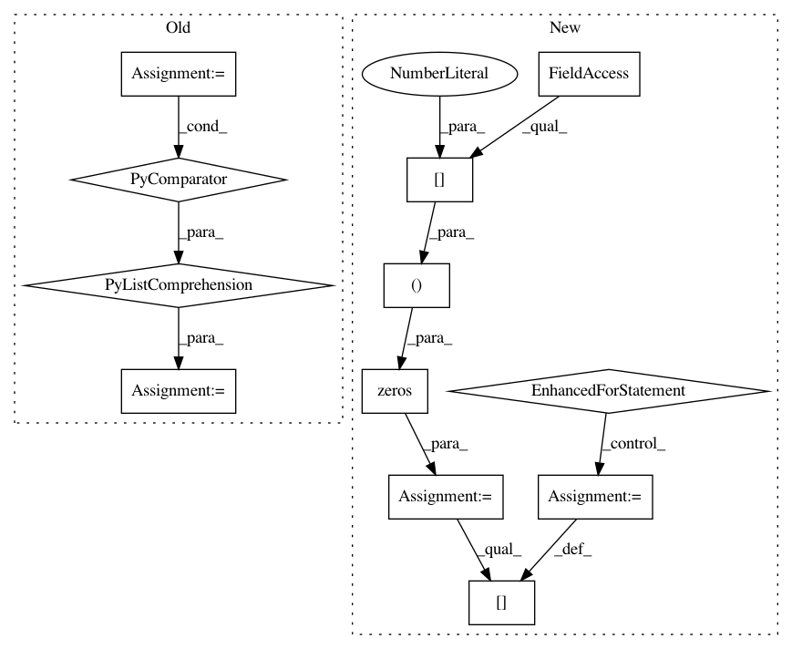

048e800fb0ee920613e03a3b201c57ac140d56ec,Orange/widgets/classify/owclassificationtreegraph.py,ClassificationTreeNode,get_distribution,#ClassificationTreeNode#,61
Before Change
self.line_descent = fm.descent()
def get_distribution(self):
s = 1.0 * sum([v for _, v in self.distribution.items()])
return [v/s for k, v in sorted(self.distribution.items(), key=lambda e: e[0])]
def num_nodes(self):
After Change
:return: Distribution of class values.
d = zeros((self.tree.value.shape[2], ), dtype="float")
for k, v in self.distribution.items():
d[k] = v
return list(d / d.sum())
def num_nodes(self):
In pattern: SUPERPATTERN
Frequency: 4
Non-data size: 12
Instances
Project Name: biolab/orange3
Commit Name: 048e800fb0ee920613e03a3b201c57ac140d56ec
Time: 2014-12-05
Author: martin.strazar@gmail.com
File Name: Orange/widgets/classify/owclassificationtreegraph.py
Class Name: ClassificationTreeNode
Method Name: get_distribution
Project Name: automl/auto-sklearn
Commit Name: 8ec7f43e04b4dc639bce41cc2213f9c92f41d59a
Time: 2016-01-14
Author: feurerm@informatik.uni-freiburg.de
File Name: test/test_pipeline/test_classification.py
Class Name: SimpleClassificationPipelineTest
Method Name: test_predict_proba_batched
Project Name: BVLC/caffe
Commit Name: 0db94786a7a463fed49825811fac903f1f1fc3c8
Time: 2014-08-05
Author: shelhamer@imaginarynumber.net
File Name: python/caffe/classifier.py
Class Name: Classifier
Method Name: predict
Project Name: automl/auto-sklearn
Commit Name: 8ec7f43e04b4dc639bce41cc2213f9c92f41d59a
Time: 2016-01-14
Author: feurerm@informatik.uni-freiburg.de
File Name: test/test_pipeline/test_classification.py
Class Name: SimpleClassificationPipelineTest
Method Name: test_predict_proba_batched_sparse